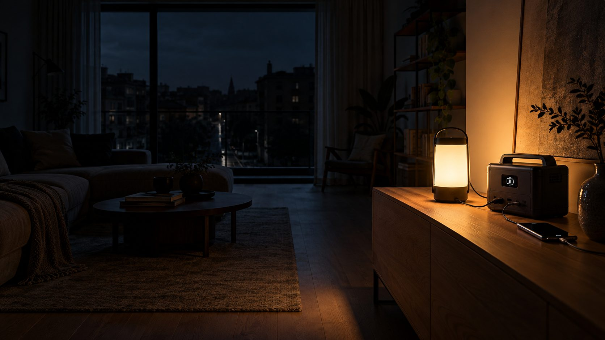
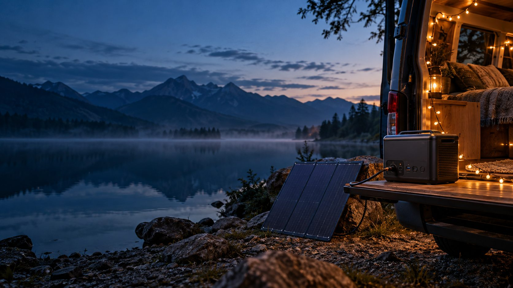

Licht an. Auch ohne Netz.
Welche Powerstation du für Stromausfall, Camping und Garten brauchst, wie lange sie hält und was sie nicht darf. Mit Rechner und Vorsorge-Liste.
Für Router, Handys und Licht reicht eine kleine Powerstation mit etwa 250 Wh, für Kühlschrank und Licht über einen Tag braucht es rund 1.000 Wh. Eine Powerstation versorgt nur Geräte, die direkt in ihr stecken, und darf nie über ein Kabel ins Hausnetz einspeisen.
Verbinde sie nie über ein Kabel mit zwei Steckern mit einer Wandsteckdose. Das setzt die Hausleitungen und die offenen Steckerstifte unter Spannung und gefährdet auch Monteure im Netz. Ganze Stromkreise im Haus versorgen geht nur über einen Umschalter vom Elektriker. Mehr zur Sicherheit
Router, Licht, Handys und Kühlschrank laufen weiter. Mit USV-Funktion merkt dein WLAN den Ausfall nicht einmal.
Kühlbox, Licht und Laptop ohne Landstrom. Mit einem Solarmodul lädst du tagsüber nach.
Heckenschere, Bohrmaschine und Akkus laden, wo keine Steckdose ist. Leise und ohne Abgase.
Welche Powerstation brauchst du?
Wähle deine Geräte. Wir rechnen aus, wie groß die Powerstation sein muss und wie lange drei Beispielgeräte durchhalten.
Deine Geräte · Watt und Stunden kannst du ändern
Noch kein Gerät gewählt. Tippe oben auf ein Gerät.
Wo finde ich die Watt-Zahl?
Auf dem Typenschild oder dem Netzteil, angegeben in W. Steht dort nur Volt (V) und Ampere (A), multipliziere beides: 19 V × 3,42 A = 65 W. Kühlschrank, Pumpen und Werkzeug ziehen beim Anlaufen kurz mehr. Das fängt die Spitzenleistung der Powerstation ab, und wir planen 20 % Reserve ein.
Wie lange sollte ich planen?
Das Bundesamt für Bevölkerungsschutz rät, sich möglichst zehn Tage selbst versorgen zu können, und sagt: Schon ein Vorrat für drei Tage hilft sehr. Eine tragbare Powerstation überbrückt realistisch ein bis drei Tage, mit Solarmodul länger.
Mehr einstellen: mit Solarmodul nachladen
Richtwerte für ein gut ausgerichtetes Modul in Deutschland: Sommer etwa 4 Stunden, Frühling und Herbst 2,5, Winter 1. Liegt es flach oder im Halbschatten, eher die Hälfte. Wir ziehen 25 % Verluste ab.
So lange halten diese Powerstations
Laufzeit mit deinen Geräten, ohne Nachladen
So rechnen wir
Bedarf am Tag = Watt × Stunden, für alle Geräte zusammen. Von der Kapazität einer Powerstation kommen etwa 85 % bei deinen Geräten an, der Rest geht im Wechselrichter verloren. Unabhängige Tests messen eher 80 %, plane also etwas Luft ein. Bei der Leistung zählen alle Geräte gleichzeitig plus 20 % Reserve, weil Motoren beim Anlaufen kurz mehr ziehen. Solar: Modul-Watt × Sonnenstunden, minus 25 % Verluste. Auch mit Solar planen wir mindestens einen ganzen Tag Puffer für trübes Wetter ein.
Vier Größen. Eine passt zu dir.
Die Kapazität in Wattstunden entscheidet, wie lange es reicht. Die Leistung in Watt, welche Geräte überhaupt laufen.
Router, Handys und Licht für einen Abend oder eine Nacht. Auch als USV am Schreibtisch.
Passt zu deinem BedarfKühlschrank, Router, Licht und Handys für etwa einen Tag. Oder eine Gastherme über Nacht.
Passt zu deinem BedarfGrundversorgung für zwei Tage. Auch Wasserkocher, Kaffeemaschine und Werkzeug laufen.
Passt zu deinem BedarfMehrere Tage oder ganze Stromkreise. Dafür gibt es Systeme mit Zusatzakku; Hausstromkreise brauchen einen Umschalter vom Elektriker.
Passt zu deinem Bedarf
Strom, wo keine Steckdose ist.
Ein faltbares Solarmodul lädt die Powerstation tagsüber nach. 200 Watt schaffen an einem Sommertag rund 600 Wh. Genug für Kühlbox, Licht und Handys.
Worauf es beim Kauf ankommt.
Kapazität in Wh
Wie viel Energie im Akku steckt. Bei deinen Geräten kommen davon etwa 80 bis 85 % an, der Rest geht bei der Umwandlung verloren.
Dauerleistung in W
Wie viel alle Geräte gleichzeitig ziehen dürfen. Plane 20 % Reserve über der Summe ein.
Spitzenleistung
Für den kurzen Anlauf von Kühlschrank, Pumpe und Werkzeug. Sie sollte deutlich über der Dauerleistung liegen.
LiFePO4-Akku
Hält typisch 2.500 bis 3.500 Ladezyklen, manche Hersteller versprechen 4.000 und mehr. Heute Standard bei guten Geräten.
USV-Funktion
Die Powerstation hängt am Netz, deine Geräte an ihr. Fällt der Strom aus, übernimmt sie in unter 10 Millisekunden. Router und Rechner laufen einfach weiter.
Solareingang
Wie viel Watt Solarmodul sie verarbeitet. Achte darauf, dass Stecker und Spannung zum Modul passen. Beides steht im Datenblatt.
Reiner Sinus
Pflicht für Heizung und empfindliche Elektronik. Im Datenblatt heißt das „reine Sinuswelle“.
Gewicht und Ladezeit
1.000 Wh wiegen um 11 kg, 2.000 Wh um 20 kg. Gute Geräte laden am Netz in etwa einer Stunde voll.
Klein, mittel, groß.
Ausgewählt nach Datenblatt: LiFePO4-Akku, USV-Funktion und Solareingang. Selbst getestet haben wir die Geräte nicht. Angaben laut Herstellern und Händlern, geprüft am 25.10.2026. Preise ändern sich fast täglich, deshalb nennen wir keine. Die Links sind PartnerlinksAnzeige
| Modell | Kapazität | Leistung | Solar | USV | Gewicht | Gut für | Angebot |
|---|---|---|---|---|---|---|---|
| EcoFlow RIVER 3 UPSKlein | 245 Wh | 300 W | bis 110 W | ja | 3,5 kg | Router, Handys, Licht; als USV am Schreibtisch | Bei Amazon ansehen |
| Anker SOLIX C1000 Gen 2Mittel | 1.024 Wh | 2.000 Wkurz 3.000 W | bis 600 W | unter 10 ms | 11,3 kg | Kühlschrank, Router und Licht für einen Tag, Gastherme über Nacht | Bei Amazon ansehen |
| EcoFlow DELTA 3 MaxGroß | 2.048 Wh | 2.400 Wkurz 4.800 W | bis 500 W | unter 10 ms | 20,3 kg | Zwei Tage Grundversorgung, Wasserkocher, Werkzeug | Bei Amazon ansehen |
Ladezyklen bis 80 % Restkapazität: RIVER 3 UPS 3.000, C1000 Gen 2 4.000; für die DELTA 3 Max nennt der Händler keine Zahl. Am Netz lädt die RIVER 3 UPS in etwa 60 Minuten, die C1000 Gen 2 in 49 Minuten (Schnellladen per App), die DELTA 3 Max nimmt bis zu 2.300 W auf. Alle drei: Akku mit LiFePO4.
Was eine Powerstation nicht darf.
Nie zurück in die Steckdose
Ein Kabel mit zwei Steckern von der Powerstation in die Wandsteckdose ist lebensgefährlich und unzulässig. Es setzt Hausleitungen und Netz unter Spannung.
Hausstromkreise nur mit Umschalter
Sollen Heizung oder Steckdosen im Haus an die Powerstation, braucht es eine allpolige Netzumschaltung vom Elektrofachbetrieb. Der Netzbetreiber wird informiert.
Heizung
Die meisten Heizungen fallen bei Stromausfall aus. Gasthermen brauchen für Steuerung und Pumpe oft 50 bis 100 W. Mit normalem Stecker darfst du sie selbst umstecken, fest angeschlossene nur über den Elektriker. Reiner Sinus ist Pflicht.
Balkonkraftwerk liefert dann nichts
Bei Stromausfall trennt sich jeder Wechselrichter in Sekundenbruchteilen vom Netz. Das schützt Monteure. Nur Speicher mit eigener Notstromsteckdose versorgen dann noch Geräte, die direkt dort stecken.
Nicht unter 0 °C laden
LiFePO4-Akkus dürfen bei Frost nicht geladen werden, außer sie haben eine eingebaute Heizung. Die C1000 Gen 2 lädt zum Beispiel zwischen 0 und 40 °C. Hitze im Auto schadet auch.
Richtig lagern
Halbvoll lagern (50 bis 70 %), kühl und trocken, alle drei Monate prüfen und nachladen. Für ständige Bereitschaft die Ladegrenze in der App auf 90 % setzen. Dauerhaft 100 % altert den Akku schneller.
Grill und Aggregat bleiben draußen
Nie in der Wohnung grillen, es besteht Erstickungsgefahr. Benzin-Aggregate laufen wegen der Abgase nur im Freien. Wer mit Gas, Kamin oder Ofen heizt, hängt einen Kohlenmonoxid-Melder auf.
Lebenswichtige Geräte
Bist du auf ein medizinisches Gerät angewiesen, sprich mit deiner Ärztin, deinem Arzt oder dem Gerätelieferanten über eine geeignete Notstromlösung. Eine Powerstation ist dann höchstens eine Ergänzung.
Bereit für den Stromausfall.
Nach den Empfehlungen des Bundesamts für Bevölkerungsschutz und Katastrophenhilfe (BBK). Hake ab, was du schon hast.
Alles für Notstrom und unterwegs.
Von der Powerstation bis zur Kurbellampe. Die Links führen zu passenden Angeboten bei AmazonAnzeige
1 · Powerstation
Die Größe sagt dir der Rechner. Für die meisten Haushalte reicht die mittlere.
2 · Nachladen mit Sonne
Achte darauf, dass Stecker und Spannung zum Solareingang deiner Powerstation passen.
3 · Licht und Nachrichten
Damit du im Dunkeln nicht suchen musst und weißt, was los ist.
4 · Sicherheit und Versorgung
Aus der Vorsorge-Liste des BBK.
5 · Camping und Garten
Für unterwegs und überall, wo keine Steckdose ist.
6 · Nur vom Elektriker
Wenn Stromkreise im Haus an die Powerstation sollen. Bitte nicht selbst einbauen.
Kurz beantwortet.
Wie lange hält eine Powerstation?
Faustformel: Kapazität × 0,85 ÷ Leistung des Geräts. Beispiel: 1.024 Wh × 0,85 ÷ 50 W ergibt rund 17 Stunden. Unabhängige Tests rechnen eher mit 0,8, weil Wechselrichter, Display und Lüfter selbst Strom brauchen. Mit deinen Geräten rechnet es der Rechner aus.
Kann ich meinen Kühlschrank anschließen?
Ja. Ein neuer, sparsamer Kühlschrank braucht 90 bis 125 kWh im Jahr, also etwa 0,25 bis 0,35 kWh am Tag. Ein Gerät von 2002 kann bis 330 kWh im Jahr brauchen, fast 1 kWh am Tag. Beim Anlaufen zieht der Kompressor kurz deutlich mehr, dafür ist die Spitzenleistung da. Öffne die Tür so selten wie möglich.
Läuft meine Heizung mit einer Powerstation?
Oft ja. Viele Gasthermen brauchen für Steuerung und Pumpe 50 bis 100 W, Ölheizungen 100 bis 250 W. Eine Powerstation mit 1.000 Wh hält eine Gastherme damit etwa 8 bis 17 Stunden in Betrieb. Hat die Heizung einen normalen Stecker, darfst du ihn selbst umstecken. Ist sie fest angeschlossen, braucht es eine Einspeisung mit Umschalter vom Elektriker. Die Powerstation muss reinen Sinus liefern.
Liefert mein Balkonkraftwerk bei Stromausfall Strom?
Nein. Jeder Wechselrichter am Netz trennt sich bei Stromausfall in Sekundenbruchteilen ab. Das schreibt die Norm VDE-AR-N 4105 vor, damit niemand an einer abgeschalteten Leitung verletzt wird. Einige Balkon-Speicher haben eine eigene Notstromsteckdose, an der Geräte direkt weiterlaufen. Mehr zum Balkonkraftwerk auf der Startseite.
Powerstation oder Notstromaggregat mit Benzin?
Ein Aggregat liefert Strom, solange Sprit da ist. Es ist aber laut, muss wegen der Abgase im Freien stehen und braucht einen Benzinvorrat. Eine Powerstation ist leise, darf in die Wohnung und ist sofort bereit, hat aber nur ihre Akkuladung. Für die meisten Wohnungen ist sie die einfachere Wahl, mit Solarmodul auch für mehrere Tage.
Was bringt die USV-Funktion?
USV heißt unterbrechungsfreie Stromversorgung. Die Powerstation hängt an der Steckdose, Router oder Rechner hängen an der Powerstation. Fällt der Strom aus, übernimmt sie so schnell, dass die Geräte weiterlaufen. Bei der C1000 Gen 2 und der DELTA 3 Max sind es laut Hersteller unter 10 Millisekunden.
Wie lagere ich die Powerstation richtig?
Halbvoll mit 50 bis 70 %, an einem kühlen, trockenen Ort, nicht im heißen Auto. Alle drei Monate kurz prüfen und nachladen, denn jeder Akku entlädt sich langsam selbst. Soll sie immer bereit sein, begrenze die Ladung in der App auf etwa 90 %. Bei Frost nicht laden.
- BBK: Vorsorge und Handeln bei Stromausfall bbk.bund.de
- BBK: Ratgeber und Checklisten „Vorsorgen für Krisen und Katastrophen“ bbk.bund.de
- inFranken: Offizielle Checkliste des Bundesamts, 2 Liter Wasser pro Person und Tag (07.02.2023) infranken.de
- Anker SOLIX Magazin: Powerstation im Haushalt, Laufzeit und Reserve (13.10.2026) ankersolix.com
- nextpit: Wie lange hält eine Powerstation, Ladezyklen und Kälte (aktualisiert 19.12.2025) nextpit.de
- co2online: Stromverbrauch Kühlschrank (04.04.2023) co2online.de
- drohnen.de: Balkonkraftwerk bei Stromausfall, NA-Schutz und Notstromsteckdosen (21.10.2026) drohnen.de
- solaranlage-tipps.de: Notstrom für die Heizung 2026 (geprüft 13.10.2026) solaranlage-tipps.de
- solaranlage-tipps.de: Powerstation laden und pflegen (geprüft 25.10.2026) solaranlage-tipps.de
- Datenblätter bei Händlern: Anker SOLIX C1000 Gen 2 tink.de, EcoFlow DELTA 3 Max solarkontor.de, EcoFlow RIVER 3 UPS toom.de und praxis.nl
Allgemeine Informationen, keine Elektro- oder Sicherheitsberatung im Einzelfall. Geprüft am 25.10.2026.